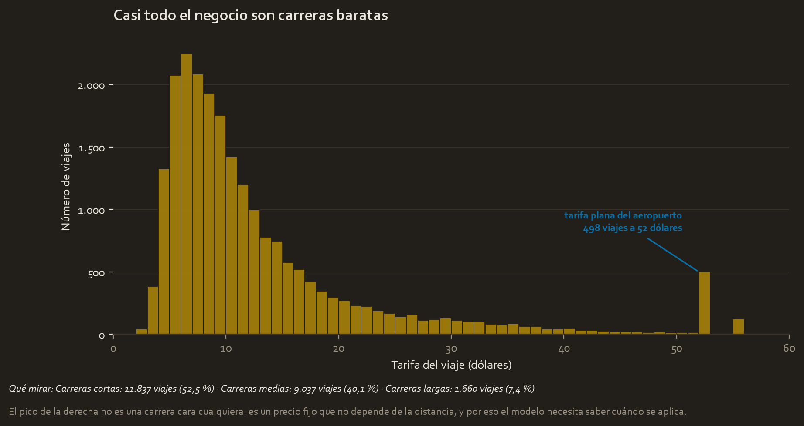
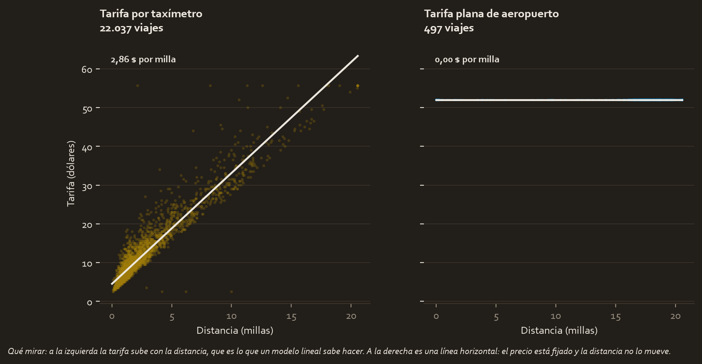
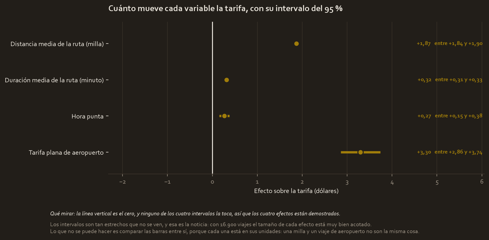
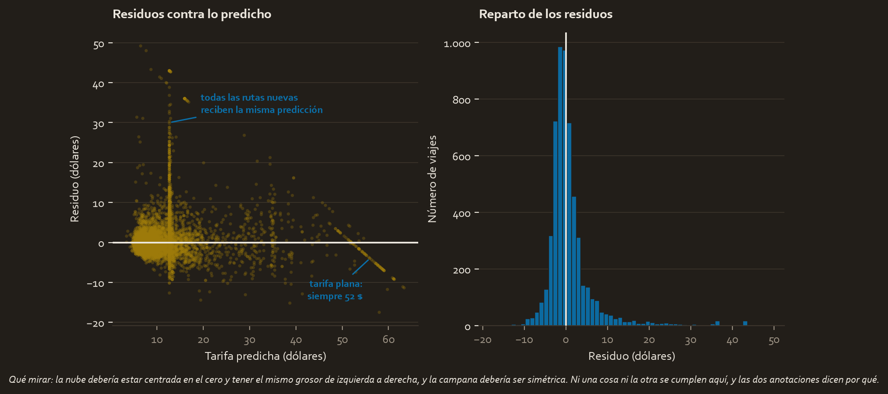

El encargo
La Comisión de Taxis y Limusinas de Nueva York quiere que el pasajero vea una tarifa estimada antes de subirse al taxi. Automatidata tiene que construir esa estimación con el histórico de un año de viajes.
Suena a problema resuelto: la tarifa de un taxi depende de la distancia y del tiempo, y eso está en los datos. El proyecto se complica en cuanto se lee bien el encargo.
La pregunta
¿Cuánto va a costar este viaje, sabiéndolo antes de que empiece?
Esas cuatro últimas palabras deciden el proyecto entero. La distancia recorrida y la duración son con diferencia los dos mejores predictores de la tarifa, y ninguno de los dos existe en el momento en que hay que dar el precio. Un modelo que los use predice casi perfecto y no se puede desplegar.
Así que las variables se separan desde el principio:
| Se sabe al reservar | Solo se sabe al terminar |
|---|---|
| Origen y destino | Distancia recorrida |
| Hora y día de la semana | Duración real |
| Tipo de tarifa | Peajes, propina, total |
| Histórico de la ruta |
Los datos
C2_2017_Yellow_Taxi_Trip_Data.csv, 22.699 viajes de taxi amarillo de Nueva York en 2017, con 17 columnas. Sin duplicados y sin celdas vacías, que es más de lo que se puede decir de casi cualquier archivo real.
La variable a predecir es fare_amount, la tarifa del taxímetro sin propina ni peajes. Su mediana es de 9,50 $ y su media de 12,85 $.
Lo que hubo que arreglar
165 viajes son físicamente imposibles y se descartan: 20 con tarifa cero o negativa, que son devoluciones; 27 que terminan antes de empezar; y 148 con distancia cero. Quedan 22.534.
Los extremos se recortan, no se borran. Todo lo que pasa del percentil 99,5 se baja hasta ahí: la tarifa a 55,67 $, la duración a 73,18 minutos y la distancia a 20,55 millas. Son 113 viajes en cada variable. Borrarlos habría cambiado en silencio la población que el modelo dice describir.

Y ahí está el hallazgo que condiciona el modelo, el mismo que apareció en el Curso 3 y que ahora tiene explicación: los 514 viajes que cuestan exactamente 52,00 $ no son carreras caras cualesquiera. 513 de ellos llevan el código de tarifa 2, la tarifa plana del aeropuerto, donde el precio está fijado de antemano.

Los dos paneles cuentan dos reglas de precio distintas. Con taxímetro, cada milla añade 2,86 $. Con tarifa plana, cada milla añade 0,00 $. Sin una variable que marque ese caso, se le está pidiendo al modelo que explique con la distancia algo que la distancia no gobierna.
El modelo, y por qué este modelo
Se ajustaron tres, y cuál es la respuesta es el contenido del caso:
| Modelo | R² en prueba | RMSE | ¿Se puede entregar? |
|---|---|---|---|
| A. Con la distancia y duración reales | 0,9461 | 2,41 $ | No. No existen al reservar |
| B. Medias de ruta de todo el dataset | 0,8847 | 3,53 $ | No. Evaluado con información que no tendrá |
| C. Medias de ruta solo del entrenamiento | 0,6746 | 5,93 $ | Sí |
El sustituto legítimo de la distancia real es la distancia media de esa ruta, que sí se conoce al reservar porque sale del histórico. La cuestión es con qué datos se calcula esa media.
El modelo B es el atajo del ejercicio oficial: calcular las medias por ruta sobre el dataset completo. Eso mete información de los viajes de prueba dentro del entrenamiento. En vez de afirmar que está mal, se midió:
La fuga infla el R² en 0,2101 y esconde 2,40 $ de error.
Un modelo presentado así parece 2,40 $ más preciso de lo que va a ser el primer día de funcionamiento.
Multicolinealidad. Con todo dentro, la distancia real y la media de la ruta dan factores de inflación de la varianza de 32,17 y 28,68: miden lo mismo. En el modelo entregado ninguna pasa de 5,50.
El modelo C, que es el que se entrega:
tarifa = 2,65
+ 1,87 × distancia media de la ruta (millas)
+ 0,32 × duración media de la ruta (minutos)
+ 0,27 × (1 si es hora punta)
+ 3,30 × (1 si es tarifa plana de aeropuerto)
Los supuestos, uno por uno
| Supuesto | Estado |
|---|---|
| Linealidad | Se cumple en los viajes con taxímetro |
| Independencia | Razonable: viajes distintos, coches distintos |
| Normalidad de los residuos | No se cumple. Asimetría 3,49 y curtosis 18,07 |
| Varianza constante | No se cumple. p de 1,74e-06 |

Las dos violaciones tienen la misma causa, y las dos estructuras se verificaron antes de etiquetarlas en la figura:
- La franja vertical son las rutas que el modelo no vio nunca. Todas reciben la misma predicción de respaldo, 12,68 $, así que sus residuos se apilan en una línea.
- La diagonal perfecta son los viajes de tarifa plana. Su tarifa real es siempre 52, así que el residuo es 52 menos la predicción: una recta exacta, con correlación de −1.
Con los supuestos rotos, los coeficientes siguen siendo utilizables pero sus intervalos son algo más optimistas de lo que deberían. Eso se dice, no se esconde.
El resultado, traducido
Sobre 5.634 viajes que el modelo no vio: R² de 0,6746, RMSE de 5,93 $ y error absoluto medio de 3,21 $.
Pero ese número medio esconde dos poblaciones muy distintas:
| Viajes | Error medio | |
|---|---|---|
| Ruta ya vista en el entrenamiento | 5.122 (90,9 %) | 2,42 $ |
| Ruta nueva para el modelo | 512 (9,1 %) | 11,11 $ |
La ruta nueva se predice 4,6 veces peor, y concentra casi todo el error del conjunto.
Qué se decide con esto
- Desplegar el modelo para rutas conocidas, anunciando un margen de unos 2,42 $. Cubre el 90,9 % de los viajes.
- Arreglar el caso de la ruta nueva antes de ampliar la cobertura. No hace falta otro modelo: hoy el sistema responde 12,68 $ a cualquier ruta desconocida, que es la media de la ciudad, y estimar la distancia geográfica entre las dos zonas ya sería mucho mejor.
- No prometer precisión uniforme. El error depende de si la ruta es conocida, así que al pasajero le corresponde ver un rango y no una cifra exacta.
Limitaciones
- Los datos son de 2017 y de una sola ciudad. Las tarifas cambian.
- No hay tráfico ni meteorología en tiempo real, que es la causa más probable de las desviaciones grandes dentro de las rutas conocidas.
- Dos supuestos de la regresión lineal no se cumplen, así que los intervalos de los coeficientes son algo optimistas.
- Solo el 53,2 % de los viajes se predice con menos de 2 $ de error. La media de 2,42 $ describe al conjunto, no a cada viaje.
- El 9,1 % de rutas nuevas de este conjunto de prueba depende de cuántos datos históricos haya. En una ciudad con menos histórico, esa fracción y ese error serían mayores.
Material completo
Estos tres proyectos no existían: se construyeron aquí. Los CSV se leen de tu carpeta del Curso 3 sin tocarlos, y todo lo demás es nuevo.
Informes y notas
- pace_plan.md 04_reports/pace_plan.md 5.2 KB
- executive_summary.md 04_reports/executive_summary.md 3.6 KB
- model_results.json 04_reports/model_results.json 3.6 KB
Código
- automatidata_regression.py 02_scripts/automatidata_regression.py 30.7 KB
- automatidata_curso4.ipynb automatidata_curso4.ipynb 15.5 KB